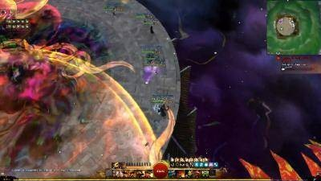
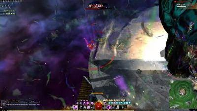
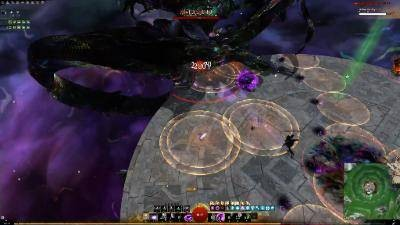
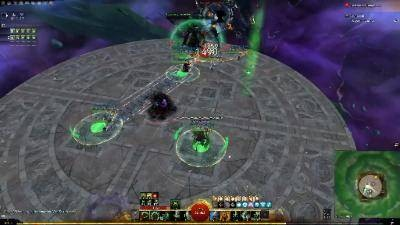
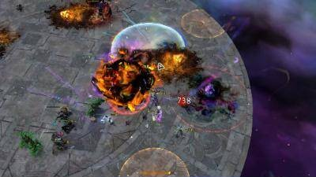
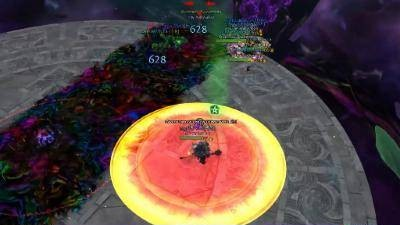
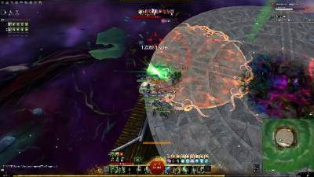
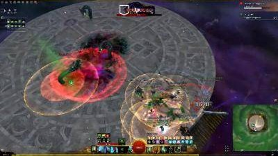
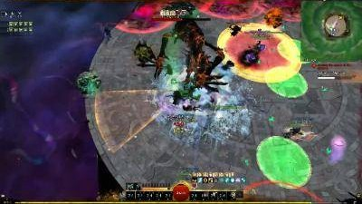

Reds: 2 nächste zur Mitte, größer und bleiben die ganze Phase → die beiden Heal-Mechanists kiten und stapeln sie (nur evade, kein Block/Invuln). Greens: 2 Spieler je Kreis, sonst Wipe – auf den Audio-Cue warten. Spreads: 7 nächste zur Mitte, 2 Kreise = down. Feste Zuteilung, jeden Pull gleich.
2
Boon-Rip auf jeden Drachen
Alle Drachen spawnen mit Boons und bekommen sie alle 20 s neu. Konstant strippen (Virtuoso, z. B. Throw Mine) – feste Mechaniken als Timing-Cue nutzen.
3
Purification: jeder Fehler wiped
Herz-AoEs downen sofort. 6 Extra-Melters pro Phase. Herz trifft Melter oder Wand → Squad tot. Kreise bremsen weniger → stärker gegenpushen.
4
Primordus: Bite & Chin töten
Bite + Magmafeld = Tod, nur rauslaufen (Spreads beachten). Chin: nur invulnbar → Safe Spot östlich am Boss.
5
Mordremoth & Zhaitan
3 Shock Waves springen (Knockback ignoriert Block). Scream: nicht dodge-/blockbar, Fear ignoriert Stabi → vorher Barrier + Protection, danach Stunbreak + Cleanse.
6
Soo-Won: Swipe tötet alles, Phase 2 ohne HP-Sprung
Swipe tötet auch Pets und Mechs → Mech vorher zurückrufen. Paw- und Tail-Slam-Wellen springen oder dodgen. Reds bleiben bis zum Kampfende. Soo-Won II startet bei 50 % (nicht 33 %), dazu Goliath + Obliterator: sofort fokussieren – springt der Goliath auf den Boss, ist der Pull meist vorbei.

④ Primordus-Bite: raus!

⑤ Mordremoth-Shock-Wave springen⑤ Zhaitan-Scream

⑥ Soo-Won-Swipe + Spreads
Details zum Nachschlagen
Hardstuck geht von 2 Heal-Alac-Mechanists (HAM), 2 Portal-Virtuosos und 2 Quickness-Heralds aus; Condi-DPS wird nicht empfohlen (Drachen haben weniger Toughness).
Grundlagen & Purification

Greens: 2 pro Kreis

Purification I: Herz schieben
Zuteilung meist: HAMs westliches Green, Virtuosos östliches, Heralds das nahe Green.
Greens wandern mit der wachsenden Void-Fläche Richtung Rand.
Stealth beim Phasenwechsel (Mass Invisibility): Adds laufen gebündelt zur Gruppe – stillstehen, Pets einholen.
Boss erst töten, wenn die nächste Koordinations-Mechanik gespawnt ist – sonst buggen die Übergänge.
5 Melters im SO, 1 von der Gegenseite – mit einem schwachen Cleave-Skill alle treffen (Bloodlust-Stacks).
Void Empowerment alle 10 s = Enrage der Purification; Titel Voidwalker: jedes Herz vor 3 Stacks.
Am letzten Kreis bekommt das Herz eine Bar – alle brechen. Portal am Südrand spart den Laufweg zu Jormag.
Die Drachen

Reds: HAMs stapeln beide Pools

Primordus-Chin: Safe Spot im Osten

Zhaitan: Giants zuerst, Scream überleben
Jormag: Breath immer im Boss-Hitbox umgehen; Frost Meteor macht den Boden rutschig – nicht abrutschen. Töten spätestens beim 2. Spread.
Primordus: 20 s Pause nach Jormag, dann Bite + Spreads. Spieler ohne Teleport gehen vorne, Teleporter warten auf die Spread-Explosion.
Kralkatorrik: fast NM; Beams geben Infirmity, Meteore – Stabi bereit, wenn Brandbombers leben.
Purif. II: Time Caster (Projektile reflektieren/zerstören), Bees nur ausweichen, Zhaitan-Pools weiträumig meiden.
Mordremoth: nicht während Shock Wave töten – eine unsichtbare Welle läuft weiter.
Drei Champion Void Giants sofort mit CC + Burst. Zhaitan ist erst nach dem 1. Green angreifbar.
Scream: HAMs zünden Over Shield + Barrier Burst und sparen Crisis Zone genau dafür. Danach erst Gift cleansen, dann heilen.
Soo-Won

Soo-Won II: Goliath + Obliterator
P1: HAMs können wegen der Reds keine Greens nehmen – 2 DPS übernehmen. Reds gegen den Uhrzeigersinn NO → NW am Rand.
Nicht vor Paw/Tail-Slam phasen – sonst spawnen die Greens in P2 asynchron.
Void Amalgamate: Ping-Pong zwischen zwei Subgruppen; Projektile reflektieren (Protective Solace), gegen den Uhrzeigersinn strafen.
Klassen & Rollen
Daten: GW2 Wingman, Challenge Mode, „Balance Patch November 2026“, Stand 24.11.2026 · Dragonvoid: Erfolgsquote 3,7 %, Median-Kill 7:43 min · Ø-DPS nur Specs mit ≥ 0,5 % Anteil · Erfolgsquote zählt alle hochgeladenen Versuche
Am häufigsten gespielt (CM)
Spec
Anteil
Virtuoso
21,8 %
Vindicator
11,2 %
Herald
10,7 %
Mechanist
8,0 %
Troubadour
7,2 %
Amalgam
6,3 %
Tempest
4,7 %
Chronomancer
4,3 %
Paragon
4,0 %
Scrapper
4,0 %
Höchster Ø-DPS (CM)
Spec
Ø DPS
Top
Willbender
31.571
32.594
Dragonhunter
30.532
30.918
Scrapper
29.025
33.985
Renegade
28.652
31.677
Reaper
28.118
29.401
Spellbreaker
27.643
30.647
Bladesworn
27.628
31.720
Antiquary
27.284
29.505
Amalgam
26.973
32.957
Vindicator
25.260
33.867
Rollen-Empfehlung (abgeleitet aus Beliebtheit + Ø-DPS)
Rolle
Specs
Warum
DPS sicher & beliebt
Virtuoso, Vindicator, Herald, Mechanist
Am häufigsten in den CM-Logs – bewährt für diese Mechaniken.
Ø-DPS unter 3,5k → in CM-Logs praktisch nur als Heiler/Support.
Komp-Tipp: Laut Wingman dominieren Virtuoso, Vindicator und Herald – genau die Hardstuck-Komp (2 HAM, 2 Virtuoso mit Portalen, 2 Quickness-Herald, Power-DPS wie Bladesworn, Soulbeast, Vindicator, Weaver, Reaper). Achtung: nur 3,7 % der CM-Logs sind Kills, die Zahlen stammen großteils aus Versuchen.
Klassentipps – worauf du achten musst
Mechanik-Bezug aus dem Guide; die Klassenhinweise sind allgemeine Spieltipps. Für die neuesten Elite-Specs (z. B. Troubadour, Ritualist, Paragon, Luminary, Conduit, Evoker, Antiquary, Galeshot, Amalgam) gelten v. a. die Klassen-Grundregeln – prüfe die konkreten Skills im aktuellen Build.
Wächter
Firebrand · Luminary · Willbender · Dragonhunter
Luminary/Firebrand: Stabi-Burst für Primordus-Bite und Shock Waves.
Protective Solace (Wächter) zerstört Projektile.
Willbender-Dashes nie Richtung Kante.
Ingenieur
Mechanist · Amalgam · Scrapper · Holosmith
Heal-Mechanist (HAM): Reds kiten, Crisis Zone für den Scream sparen.
Mech vor dem Swipe zurückrufen!
Elixir S: Invuln für Shock Wave beim Red-Ablegen.
Mesmer
Virtuoso · Chronomancer · Troubadour · Mirage
Virtuoso: meistgespielt – Portale, Boon-Rip, Mass Invisibility.